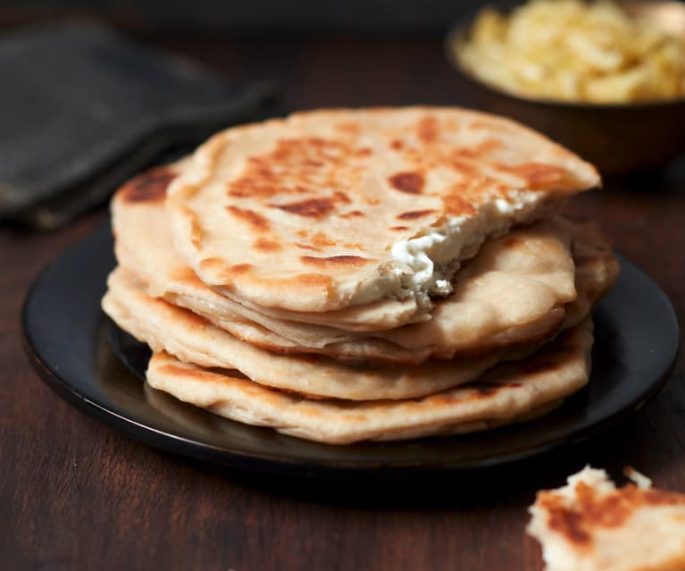

Cheese Naan

A tasty Indian bread with cheese inside.
Let's discover a bit about Indian cultural dishes.
Ingredients
- 4 1/4 cup all-purpose flour
- 3/4 cup water
- 1/2 cup Greek yogurt
- 4 tablespoons vegetable oil
- 1 teaspoon salt
- 1 teaspoon sugar
- 2 pinches of baking powder
- 1 packet and a half of instant dry yeast
- 12 Laughing Cow (2 per Naan)
Steps
- In a bread machine or a food processor, mix all the dry ingredients: flour, instant dry yeast, baking
powder, salt and sugar.
- Create a well in the center of the flour and add the liquid ingredients: oil, yogurt, 3/4 cup water.
- Set the bread machine on the pizza dough setting for 10 to 15 minutes.
- Cover the dough with a clean dish towel and allow it to rise for at least 1h30 in a warm spot in the kitchen.
- Divide the dough into 12 balls, then roll them out with a rolling pin on a floured work surface.
- Spread some Laughing Cow cheese in the center of one of the circles (don't spread the cheese up to the edge),
place another one on top and seal the edges with your fingers.
- On a plancha or in a frying pan, cook for 5 minutes on both sides.
- Place on a dish and add a knob of butter on each bread...